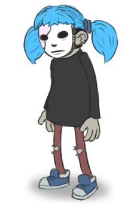
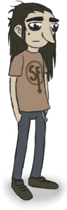
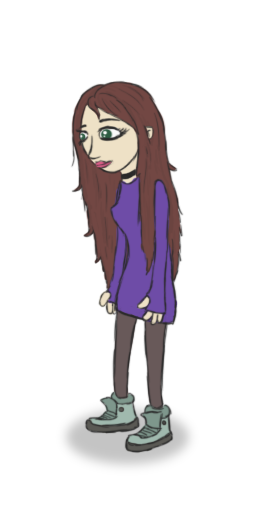
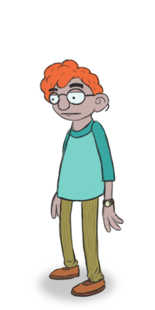

Sal Fisher
Mais conhecido Sally Face ele é o personagem principal, Sal é filho de Henry Fisher e Diane Fisher na qual
ele e sua mãe sofrem um terrivel acidente que causando a morte dela e fazendo usar um protese facial por conta
de suas graves cicatrises.
Sal aparente ser um garoto inteligente e curioso gosta de investigar sobre as anomalias sobrenaturais que acontecem no seu
prédio, ele também é um garoto bem calmo isso é mostrado várias vezes
no jogo quando ele está lidando com fantasmas e demônios. Ele se mostrou amigável e educado,
independentemente das respostas rudes ou amedrontadas de outras pessoas.

Larry Johnson
Larry é o melhor amigo de Sal e mora no mesmo apartamento que ele, filho de Lisa Johnson e Jim. A vida
mudou para Larry quando ele brincou com fogos de artifício escondido de seus pais e acidentalmente
matou o coelho de estimação da Sra. Gibson. Na mesma noite, ele encontrou um Demônio de Olhos Vermelhos,
que estendeu a mão e tocou o menino. A partir daí, as coisas pioraram, seu pai desapareceu,
o incidente com o foguete o colocou no reformatório por duas semanas e o fez perder aulas suficientes para
frequentar a escola de verão, e sua bicicleta foi roubada. Essa série de eventos infelizes levou Larry a
acreditar que havia sido amaldiçoado.
Larry é bem protetor com os amigos e quando acredita em algo é difícil de o convencer ao contrário, ele era
bem próximo de seu pai, desenvolvendo um gosto comum por Heavy Metal e um senso de curiosidade acima da média ele também é um ótimo artista,
tendo quadros dele espalhado pelo todo quarto.

Ashley Campbell
No jogo não mostra seus parentes e nem muito sobre sua história, Sal tem uma queda por ela que é mostradado no cap.2
quando eles se conhecem.
Ashley demonstra possuir uma personalidade muito leal e calma, ela não se importa com o rosto de
Sal até o ajudando a limpar o sangue de seu rosto após levar uma de ser atormentado pelo Travis. Ela adora arte sendo a melhorartista de seu grupo (Sally,
Larry, Todd e Ashley).

Tedd Morrison
Filho de Janis Morrison e Ray Morrison, namorado de Neil. Ele é bem inteligente e bem esperiente com técnologia
(Ele configurou o supergear boy de Sally para capturar ondas sobrenaturais). Seus pais aparentemente viram isso
como uma quantidade de tecnologia doentia e lhe deram um peixe que ele chamou de Bob para
"combater toda a tecnologia".
Antes de ser infectado pelo Demônio de Olhos Vermelhos, Todd era muito objetívo,
inteligente e calmo. Disposto a ajudar Sal mesmo após
acabarem de se conhecer.
Isso continuou até seus dias de faculdade, dando as boas-vindas a Sal
para ir morar com ele e com Neil e continuando a investigação sobre os
Devoradores de Deus.
